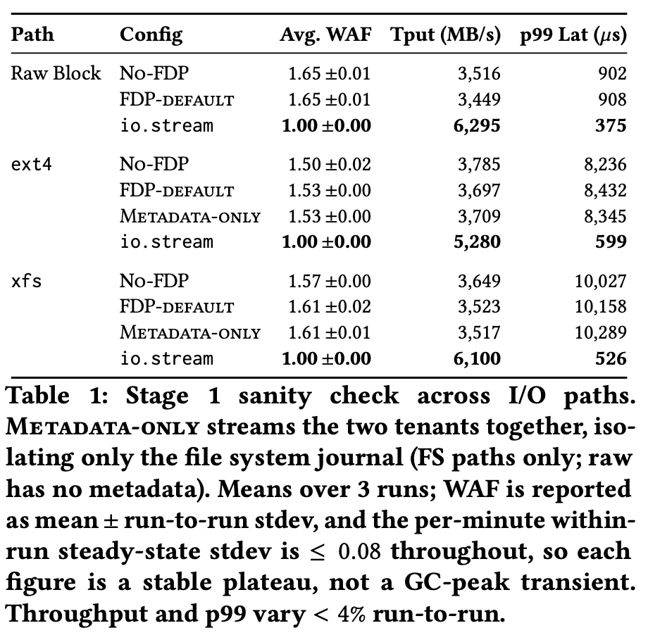
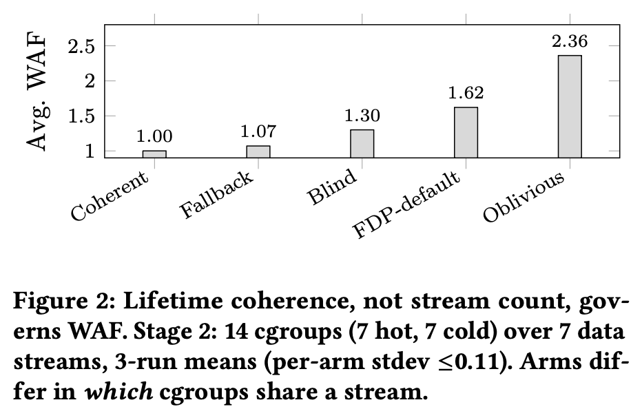
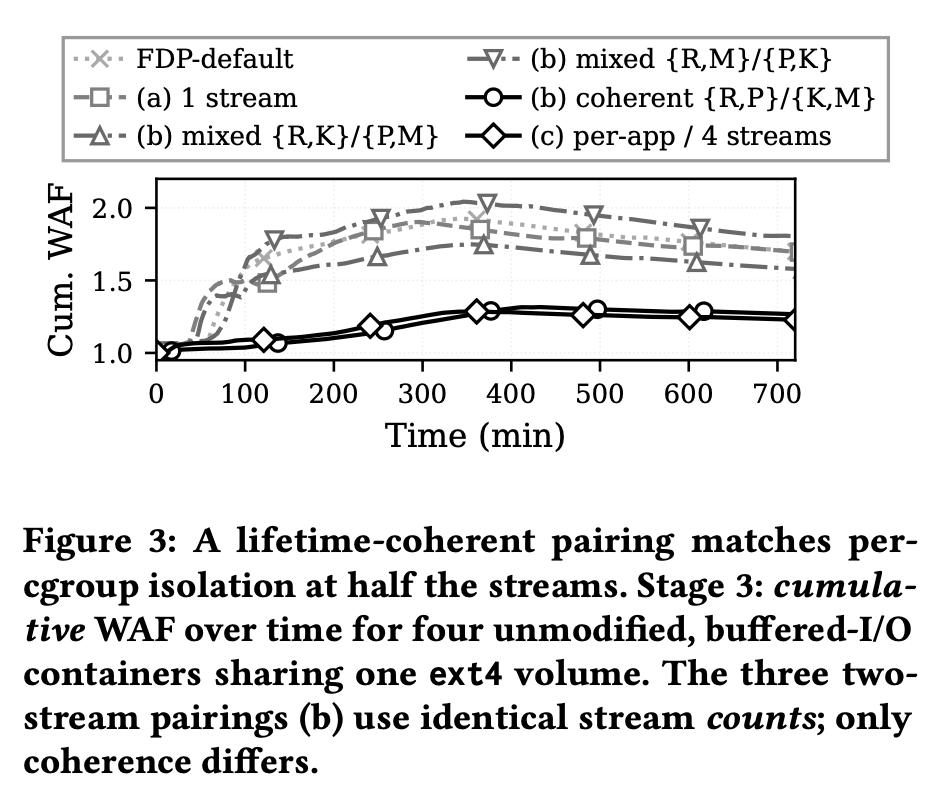

최신 SSD 기술인 FDP(Flexible Data Placement)를 애플리케이션 소스코드 수정 없이, cgroup(컨테이너) 단위로 데이터 배치를 제어할 수 있는 시스템 아키텍처를 제안합니다.
손수호, 김진헌, 이기영
Samsung Electronics
ACM HotStorage '26
(Prague, Czech Republic)
플래시 미디어 내에서 독립적으로 GC가 수행되는 영역입니다. 다중 RG 간에는 미디어 레벨의 병렬성을 확보할 수 있습니다.
FDP에서 관리하는 최소 스토리지 할당 단위로, 내부적으로 다수의 NAND Block들로 구성되어 실제 Erase 작업이 일어나는 단위입니다.
SSD 컨트롤러가 현재 데이터를 기록하기 위해 열어둔(Open) 활성 RU를 지칭하는 내부 포인터 리소스입니다.
호스트가 데이터 생명 주기 격리를 위해 각 I/O 단위에 부여하는 식별자이며, 디바이스 내의 특정 RUH로 매핑됩니다.
본 논문은 데이터센터 환경에서 컨테이너(cgroup) 단위가 데이터 수명 주기를 그룹화하고 FDP 스트림을 할당하기 위한 가장 이상적이고 실용적인 Granularity임을 제안합니다.
cgroup (blkcg) 식별자는 VFS부터 Page Cache, Block Layer에 이르기까지 모든 I/O 경로에 기본적으로 태깅되어 유지됩니다. 따라서 애플리케이션의 수정 없이도 정확한 I/O 출처 추적과 스트림 맵핑이 자연스럽게 이루어집니다.
데이터센터와 클라우드 환경의 시스템 운영자(Operator)는 이미 쿠버네티스(Kubernetes) 등 오케스트레이터를 통해 컨테이너(cgroup) 단위로 자원을 격리하고 관리하고 있습니다. 따라서 이를 FDP 스토리지 격리 기준으로 활용하는 것은 기존의 인프라 관리 체계와 완벽하게 부합합니다.
blkcg 컨텍스트를 정확히 역추적하여 Block Layer에 인가합니다.blkcg를 획득하여 Block Layer로 전달합니다.io.stream 속성 노드에 스트림 ID를 기록하면, 해당 테넌트에서 발생하는 모든 I/O는 지정된 RUH로 확정 매핑됩니다. echo "259:0 1" > /sys/fs/cgroup/Tenant_A/io.stream
io.stream이 설정되지 않은 프로세스나 최상위 Root cgroup의 I/O는 모두 시스템 기본 스트림(RUH 0)으로 수렴합니다.jbd2 저널링과 같은 커널/파일시스템의 내부 메타데이터 쓰기는 커널 스레드에서 생성되며 기본 Root 컨텍스트로 처리됩니다. 따라서 별도의 복잡한 FS 튜닝 없이도 사용자 데이터(RUH 1, 2)와 시스템 메타데이터(RUH 0)가 물리적으로 완벽히 격리되는 이점을 얻게 됩니다.
io.stream 패치가 적용된 Linux Kernel 7.0 환경
데이터 생명 주기에 맞춘 물리적 격리로 인하여 디바이스 내부의 무효 페이지 회수(GC) 오버헤드가 사실상 소멸되었습니다. 이로 인해 NAND 대역폭 손실이 억제되었을 뿐만 아니라, 펌웨어 단의 락(Lock) 경합 및 인터럽트 병목 현상이 해소되어 호스트 단 p99 Latency가 최대 93%까지 대폭 개선되는 결과를 도출했습니다.


정적인 관리자 오버라이드 룰셋에서 탈피하여, 리눅스 I/O 스케줄러 계층이 런타임에 실시간으로 cgroup 단위의 쓰기 주파수 및 수명 주기를 샘플링하여 머신러닝 기법으로 스트림(RUH) 맵핑을 자율 조정하는 지능화 프레임워크 연구가 필요합니다.
앞선 분석에서 규명했듯 다수의 물리 스트림 유지는 펌웨어 단의 공간 프로비저닝 비용(OP 확보 제약)을 동반합니다. 최소 필수 RUH 집합을 선별 유지하고, 생명 주기가 유사한 마이너 테넌트(Minor Tenants)를 휴리스틱 기반으로 클러스터링(병합)하는 스토리지 자원 극대화 알고리즘의 개발이 요구됩니다.
전체 Free Block을 단일 글로벌 풀로 운용하여 디바이스 내 OP 비율이 극대화되나, I/O 워크로드 간 데이터 혼재가 발생합니다.
초기 호스트 기록(Host Write) 시에만 논리적 스트림을 유지하며, 공간 최적화를 위해 런타임 GC 도중 데이터를 병합합니다.
각 스트림(RUH) 단위로 독립된 GC 풀을 프로비저닝합니다. 완벽한 생명 주기 분리가 달성되나, 펌웨어 내 통합 가용 OP가 급감합니다.
경청해 주셔서 대단히 감사합니다.
논문의 설계 및 구현 사항과 관련한 질문을 환영합니다.